In this project, we implemented a rasterizer for triangles that reads in svg files and renders it into an adjustable GUI, as well as various functionalities and sampling techniques to improve the resulting render quality of the images.
The implementation of supersampling, barycentric coordinate interpolation, texture mapping, and transform functions for the rasterizer were integral to this project. For the rasterizer, we started with a simple sampling per pixel to draw the single-color triangles. Supersampling conducts antialiasing which removes jaggies and artifacts from the sharp edges of the triangles. Barycentric coordinate interpolation is important to enable gradient coloring and also helps with pixel and level sampling for texture mapping. Mipmaps and various forms of sampling techniques were used to efficiently draw triangles with colors defined by texture mapping. Some simple functions to support translation, scale, and rotation transforms as well as color gradients were created as well.
For the most part, to implement the rasterization and many of these functionalities, it was fairly straightforward - it was simply just translating the mathematical knowledge we learned from the lectures into C++ code. However some portions of the project were challenging and did require more creativity and reasoning such as how to determine if a point is in a triangle regardless of the winding order of the vertices, and how to store supersampled data.
This project was extremely interesting and fulfilling in the sense that we learned a lot about various sampling techniques and the effect of various frequencies on the image. The first time seeing the drastic difference between single pixel sampling and supersampling up close was very interesting. Also, the fact that a color gradient can be formed from triangles with interpolation of colors was mind blowing. Implementing these functions ourselves definitely gave us better intuition of how the mathematical concepts and algorithms work behind the scenes to generate the images that we see on our monitors.
| 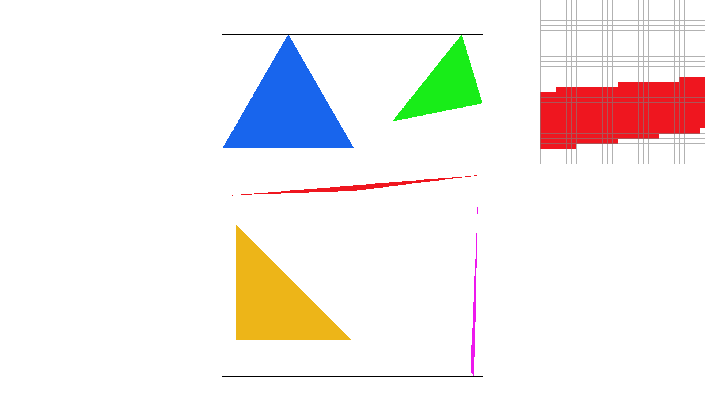 | 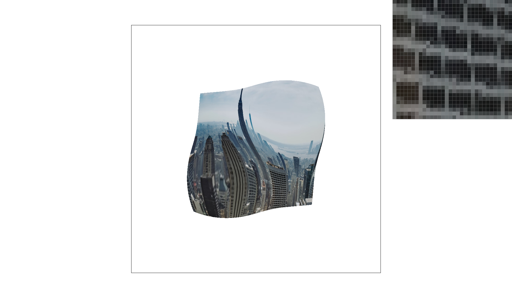 |
| 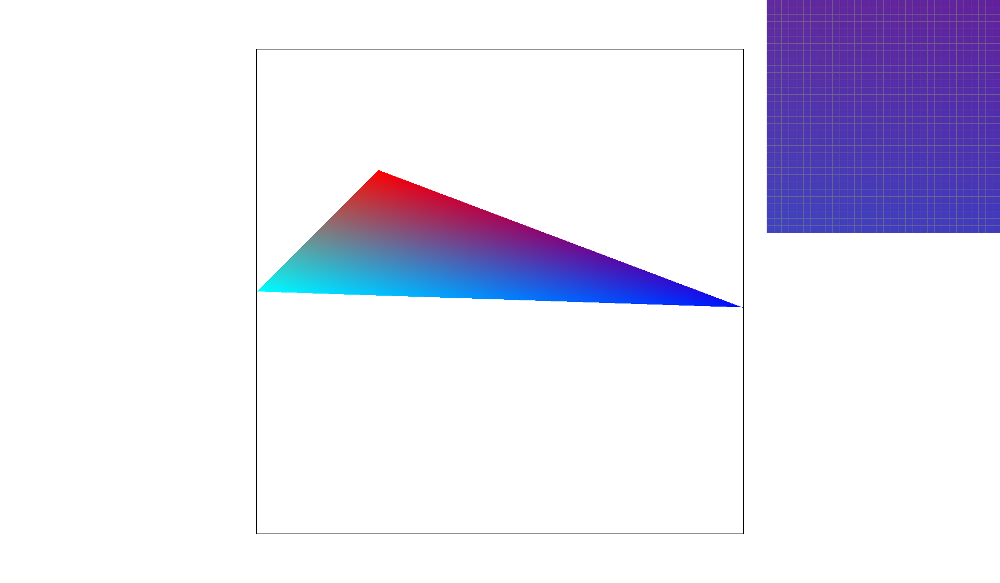 | 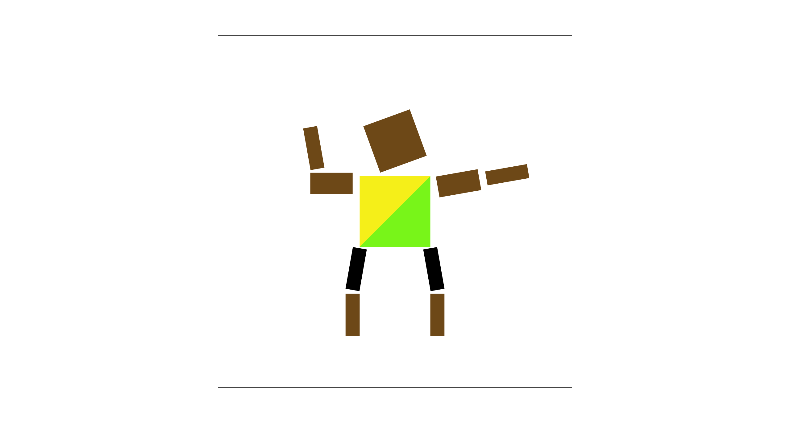 |
This task of the project implements simple triangle rasterization. The process for rasterizing triangles is as follows.
First, three points must be specified which represent the vertices of the triangle we wish to draw. Using these vertices we can define a line between each two points (along with a corresponding normal vector) for 3 sets of lines. Using this information, we define a line equation for each line which tells us whether a given point is above, below, or on a given line depending on the magnitude of a dot product. If the lines are drawn by connecting vertices counterclockwise then we require all the line equations to output values greater than or equal to 0, or less than or equal to 0 if the lines are drawn clockwise.
Once the line equations are defined, we can begin to sample points in the vicinity of the triangle to be drawn. One method for determining the area to sample is to draw a bounding box around the triangle based on the min and max ‘x’ and ‘y’ values of the triangles vertices. Each sampled point, taken at the center of each pixel, is then passed through all of the line equations. If the point satisfies all the line equations then we draw it to the buffer with the desired color for the triangle
For this part, we implemented supersampling as it was described in lecture. In our implementation, we render a higher resolution to the sample_buffer, based on the sample rate. Then in the resolve_to_framebuffer() function, we average the pixels from the sample buffer to downsize the sample buffer into the frame buffer. Supersampling here is useful to solve issues with aliasing such as jaggies and artifacts from high frequencies in the image, as we can see in the image below with a sample rate of 1 per pixel. Modifications to the rasterization pipeline mainly included the rasterize_trangle() function, where it was changed so that it modified the sample buffer in increasing the resolution, and the resolve_to_framebuffer() function which averaged the sample buffer to scale it down for the frame buffer. As such, this supersampling antialiases our triangles by filtering out the high frequencies.
|
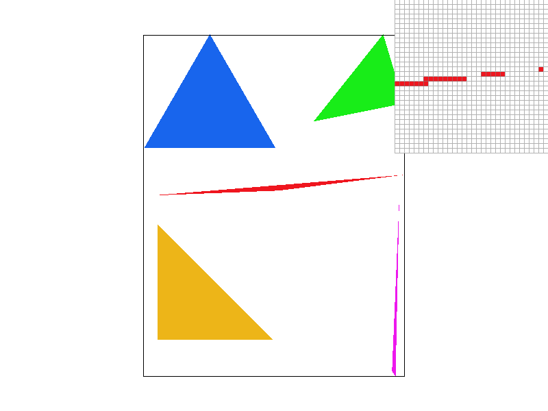
|
|
|
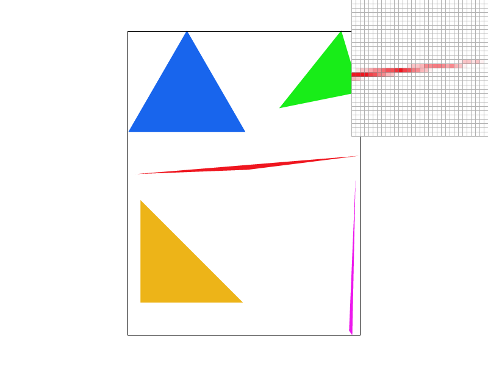
|
In this portion of the project translation, scaling, and rotation matrices were implemented as specified by the SVG specification.
Using these transformations we were able to render a “cubeman”. This cubeman was modified to become the image below. This cubeman is an artistic depiction of none other than the fastest man in the world - Usain Bolt - performing his iconic victory celebration. This was accomplished by a rotation of the arms and legs with slight translation to ensure everything is aligned correctly, along with specifying colors to match the typical Jamaican uniform as an artistic touch.
In this part of the project we implemented Barycentric coordinates.
Barycentric coordinates provide us a way to interpolate across the three vertices of a triangle. This is useful as these three points of the triangle can represent colors, textures, or other types of data. For example, in the image below the triangle is defined with each vertex being a given color and Barycentric coordinates allows us to fill in each point of the triangle with a weighted sum of how far the point is from each vertex. We can see in the zoomed in portion of the image that the midpoint between the red and blue vertices is purple, as we would expect from mixing the two colors.
In the context of texture mapping, pixel sampling refers to the way in which pixels from a texture are sampled to a given position in screen space. To do so, we sampled each pixel for their barycentric coordinates which can be used on the corresponding texture to get the color. However, an issue arises where these coordinates do not always land on the center of a pixel as the texture space may be non-linear. Using methods like nearest sampling or bilinear sampling can be used to remedy this problem. Nearest sampling is a basic approach in that it simply finds the closest pixel to the sample point and just uses that color. Bilinear sampling instead takes an average of the nearby pixels which can help remove some jagginess from the resulting image as it smooths out the colors.
Obviously as we discussed in the previous tasks, increasing the supersample rate from 1 per pixel to 16 per pixel will increase the smoothness of the image. But for the difference seen between nearest sampling and bilinear sampling, the biggest effect can be seen where there are higher frequencies. Because nearest sampling uses the same texal for multiple points, it can look more pixelated and blocky, but bilinear sampling would show a more smoother color transition similar to super sampling - but at a much more reduced cost.
|
|
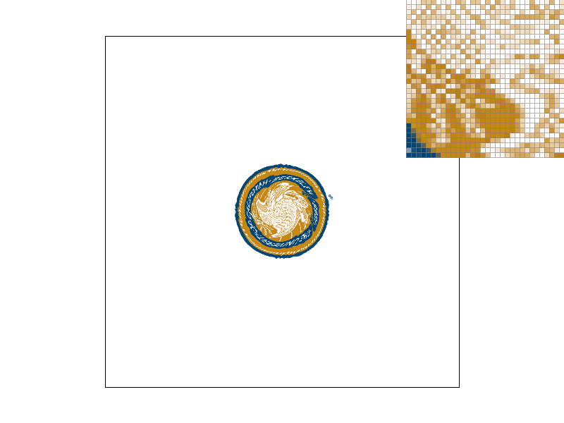
|
|
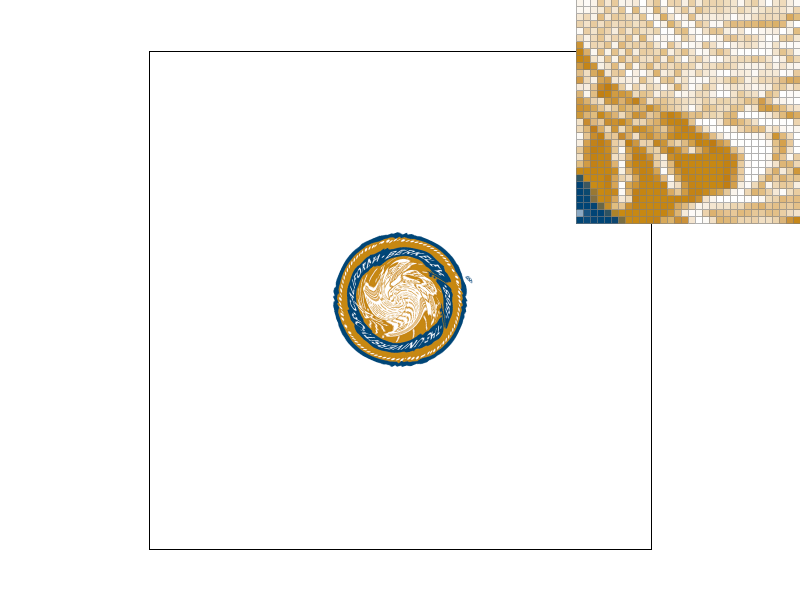
|
|
Level sampling refers to selectively using lower quality textures to sample from when performing texture mapping. This is useful as mapping a high quality texture to an area that represents a very small portion of our screen will result in aliasing.
One method of level sampling involves utilizing mipmaps - storing within memory textures that are a factor of two lower quality than the original full resolution texture. Each level of this mipmap represents a lower quality texture.
But how do we select which level to use? This is done by measuring the Euclidean distance between our current point and its neighbors in texture coordinates. We take the maximum of the distance in the u and v directions, catering to the worst case scenario in regards to the texture being stretched. We then take the log of this value base 2, as each texture is 2 times lower quality than that before it.
At this point we have options. If we want to do nearest texture sampling, we round the value found in the previous step and the resulting number gives us the level of the mipmap to sample from for that point. Alternatively we can do bilinear filtering and sample from the closest two levels, weighting each texture by how close they are to the raw value we calculated.
We now have the following in our toolbox: pixel sampling, level sampling, and supersampling. Each of these has its associated speed, memory usage, and antialiasing tradeoffs. Pixel sampling results in speed reduction as we need to define the Barycentric coordinates and then perform three linear interpolations if we do bilinear sampling. Level sampling has a performance impact in the need to find the texture coordinates of neighboring pixels and then calculate the associated level followed by an interpolation if doing bilinear. Level sampling also requires additional memory in the need to store the additional mipmap textures, though this is only a one third increase. Both of the aforementioned techniques are effective at mapping textures onto the scene and doing so while reducing aliasing. They may not necessarily produce as “sharp” of a technique as supersampling. However, supersampling has massive performance implications, requiring a multiple of processing compared with the baseline. For example, for 16 times supersampling we are doing 16 times as much work as for each pixel we were sampling, we now sample 16 times as many.
`A combination of using these methods can be seen below in the images of New York City. In the top right corner of each image we zoom into the windows of a building to observe the effects of sampling at different levels and using nearest or linear methods.
|
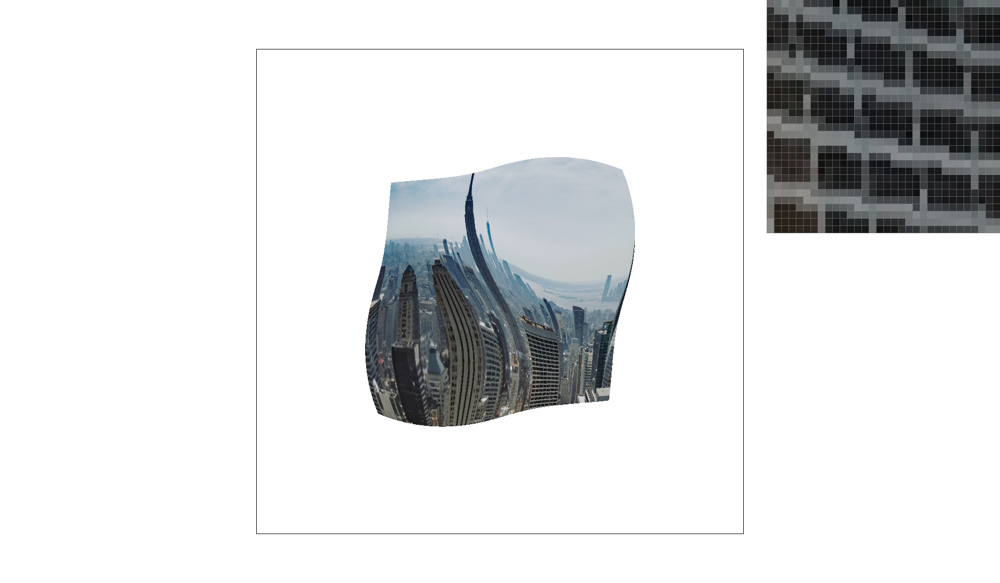
|
|
|
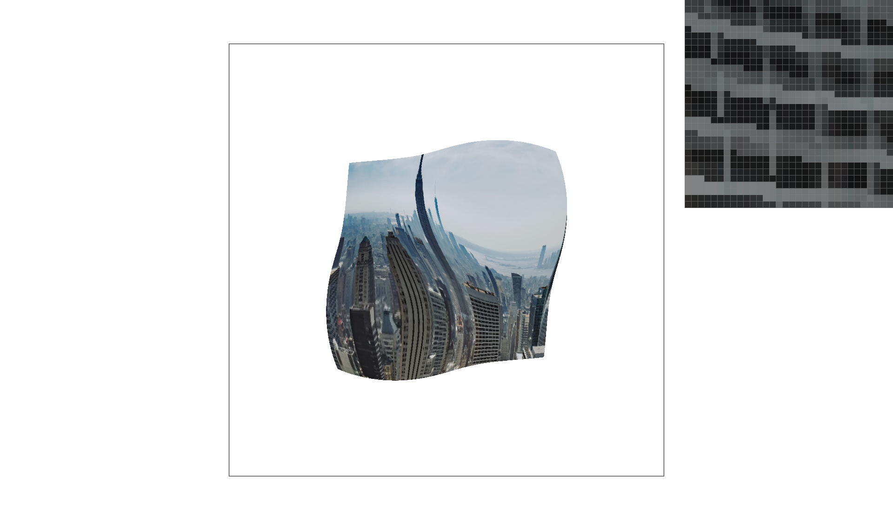
|
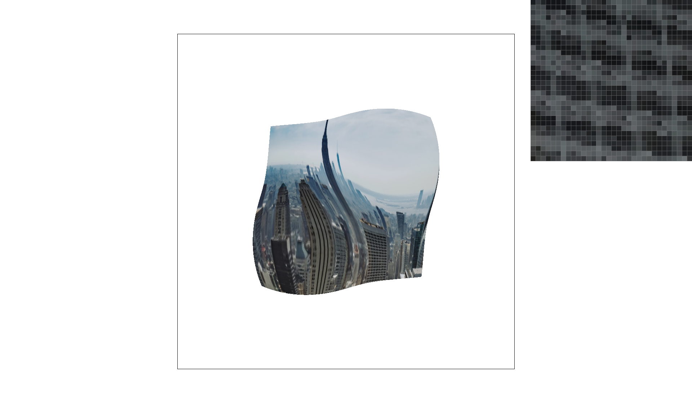
|